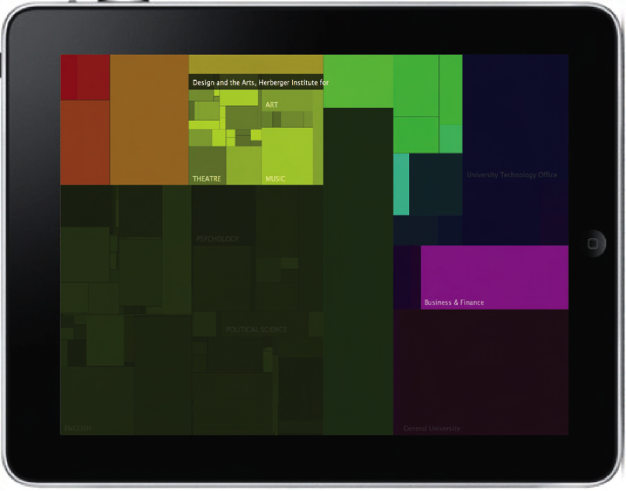
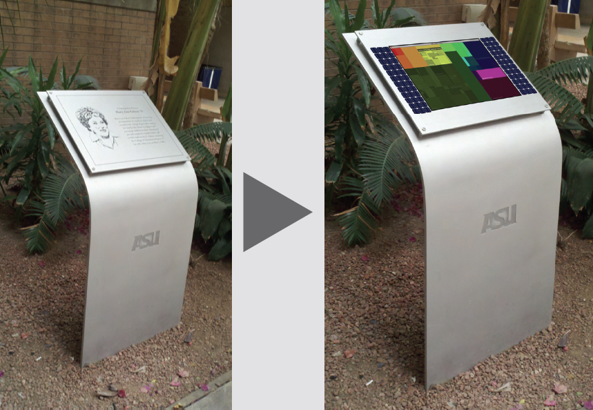
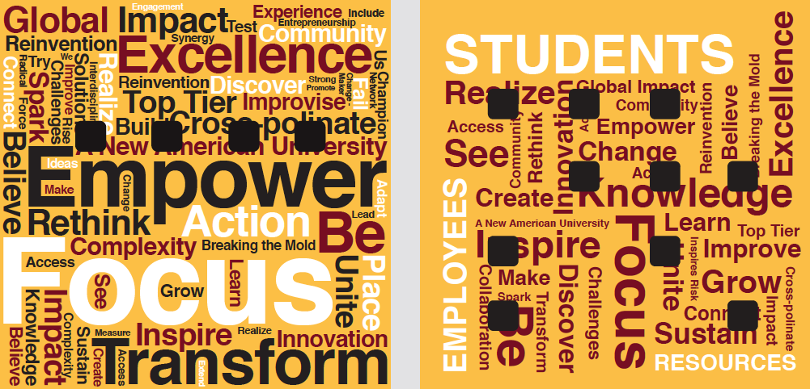
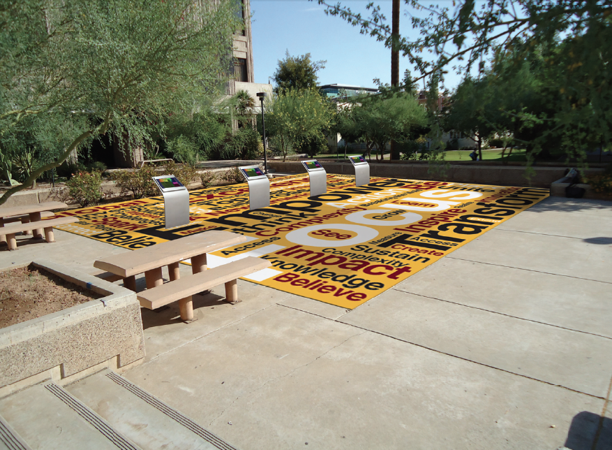
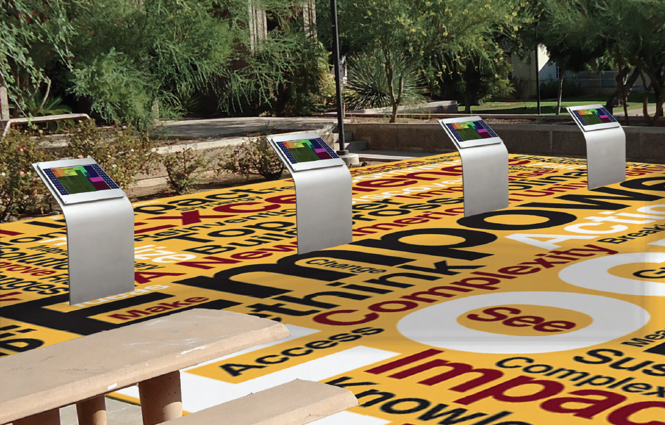

In this X-Square proposal we seek to situate Arizona State University market branding within the context of university statistical data that range from finance to student retention rates.
We are interested in providing the public with accessibility to the university's statistical information as a public service to our community. Our proposal presents the public with novel ways to interface and experience university data through environmental graphics, social engagment, and digital media interaction. As a part of our design, we encourage the community to engange in civic participation by providing them with opportunities to leave comments about their thoughts regarding ASU's image and operations. To encourage communty, our mediated system will also parse and present these comments interactive data in order to represent public perception.
Our proposal is a combination of digital media arts, architectural placemaking, and visual arts. These elements are composed to provide the public with accessibility to information that highlights the nodes of dissonance and consonance between the ASU branding messages communicated to its academic community, and university statistical data. Through this exploration we may be able to identify public perceptions, as well as encourage people to interact socially in a public space. We seek to create a place where people feel encouraged to think critically about the changes that Arizona State University currently faces, as well as those that lie ahead for the institution. We believe that by physically situating this information within the Arizona State University campus, we can create a place where people can gather to explore and discuss the cultural, academic, and financial meaning of Arizona State University's brand identitiy.
In this proposal we explore the presentation of Arizona State University statistical data juxtaposed with the verbage and graphic standards of its current market branding campain. We do this through a design that echoes, the construction of ASU messages to the community, the construction of solar arrays, and ASU's wayfinding system. By using these components, we provide the ASU community with a powerful vehicle through which it can analyize the implications of the learning paradigm we now know as "A New American University." We are inspired to do this work to better understand the cultural and financial challenges that American universities face as they compete for resources during these economically challenging times, and how this impacts learning, research, and student life.
Download our proposal for the 2011 X-Square competition.
Download the latest version of the software.
PLEASE NOTE: This is just a demo version of the project.
What is X-Square? Answer here
I'm responsible for the software design of this project. I have prototyped both audible and visual displays that allow visitors to use computer touch screen gestures in order to navigate information. Our interactive system will allow users to access information while situated as a series of relationships between various types of data. The mapping of data is inspired by classical information design strategies . Our software will use both graphics and sound to convey information to the user.
Our final software will be developed to run on Apple iPads that are mounted and secured to the information kiosks presented in our concept research. The following page will demonstrate a mockup of this.
The images below show a prototype of our software that presents the university operating budget based upon state funds. The sizes of the boxes in these images represent the amount of money allocated to specific university programs. Hand gestures will enable a user to “drill-down” into the data in order to explore and navigate information and relationships at higher and lower levels of university operation.
Fig. 1. The interactive visualization software design.
We propose the adaptive reuse of this pedestal in our design for the purposes of function, sustainability, and semiotic value. In this design, we use a custom removable faceplate that can be secured to the pedestal. This faceplate is a framing device that allows for the mounting and display of solar arrays and an iPad. Its face is laminated with clear tinted vinyl in order to protect the electronic components from rain and sun damage.
Fig. 2. Pedestal design.
In addition to the installation of digitally mediated kiosks, our design includes the information they communicate within the context of an environmental floor graphic composed of the verbage used by ASU in its market branding. The following are a few top-view designs that we are considering. The boxes depicted in the graphics below represent the placement of the kiosks.
Fig. 3. Floor design graphics.
Fig. 4. Kiosk Installation Concept.
Figure 5 and Figure 6 illustrate how all of the elements come together in our design.
Fig. 5. Our design mock-up - overview.
Fig. 6. Our design mock-up - zoomed view.